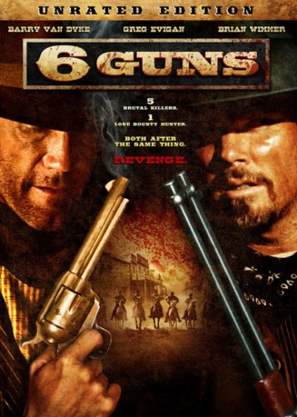

#1895 6 Guns
 
 IMDB-Wertung: 4.1 / 10
IMDB-Wertung: 4.1 / 10  Metascore: 0
Metascore: 0 
Nachdem die junge Selina (Sage Mears) brutal vergewaltigt wurde, muss sie mit ansehen, wie ihre ganze Familie kaltblütig niedergeschossen wird. Sie sucht Unterstützung bei dem berüchtigten Kopfgeldjäger Frank Allison (Barry van Dyke), der aus ihr alsbald eine äußerst gefährliche Revolverheldin macht. Bis für Selina und ihren sechschüssigen Colt endlich die Zeit der Rache gekommen ist.
Jahr: 2010
Dauer: 95 Minuten
FSK: 16
Land: USA Studio: Asylum, TheTonspuren: DTS - ,
Untertitel:
Auflösung: 1080p (1920x1080) Größe: 5109 MB
Genre: Western
Regisseur: Shane Van Dyke
Drehbuch: Geoff Meed
Soundtrack: Chris Ridenhour
Darsteller:
- Barry Van Dyke als Frank Allison
- Sage Mears als Selina Stevens
- Greg Evigan als Sheriff Barr
 Geoff Meed als Lee Horn
Geoff Meed als Lee Horn- Carey Van Dyke als Joe Beall
- Jason Ellefson als Tommy Kleiber
- Jonathan Nation als Henry
- Erin Marie Hogan als Scarlet
 Peter Sherayko als Russian Pete
Peter Sherayko als Russian Pete- Rick Groat als Jake
- Nikki Pelley als Background person
 Marilyn Monrovia als Background person
Marilyn Monrovia als Background person- Jude Gerard Prest als Samuel , uncredited
- Gregory Paul Smith als Bully , uncredited
- Brian Wimmer als Will Stevens
- Shane Van Dyke als Chris Beall
- Anya Benton als Vilma
- Valerie K. Garcia als Raquel
- Kenny A. Remmel als Paul
- Riley Polanski als David Stevens
- Becky Byrum als Clementine
- Don Harrington als Deputy Wes Coffey
- 'Snake Dancer' Tom Troutman als Snake Dancer
- Cathi Harrington als Tara Montana
- Cody Williams als Weakeyes Cody
- David Hendrex als Background person
- Sarah Hendrex als Background person
- C.E. Rusa als Background person
- Mickie Free als Background person
- Larry Van Loon als Background person
- Dave Booth als Background person
- Tony Redburn als Background person
- Jerry L. Thompson als Background person
- Cash Kelleway als Background person
- David Baird als Background person
- James Mikelson als Background person
- Eduardo Steger als Background person
- Maureen Menyhart als Background person
Datei: X:\HD-Western-2000-2015\6 Guns (2010, FSK16, 1920x1080).mkv seit 01.09.2015
Festplatte: HD Eastern+Western
 Es gibt insgesamt 61 Filme in der Gruppe 'HD-Western-2000-2015'
Es gibt insgesamt 61 Filme in der Gruppe 'HD-Western-2000-2015'